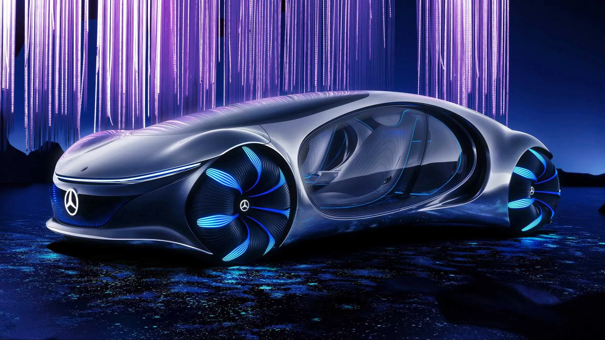

Історія
Історія цієї марки складається з історій двох відомих автомобільних
брендів — Mercedes («Мерседес»), що випускалися німецькою компанією
Daimler-Motoren-Gesellschaft («Даймлер-Моторен-Гезелльшафт») і Benz («Бенц»), які будувалися
фірмою Benz & Cie.. Обидві компанії цілком успішно розвивалися самостійно, але 1926 року
злилися в новий концерн «Даймлер-Бенц».
Benz
У 1886 створено триколісний самохідний візок з бензиновим двигуном. Того
ж року його творець Карл Бенц отримав патент на винахід. Перший у світі триколісний
автомобіль запустили у серійне виробництво.
Через сім років, поступившись Даймлеру першістю, Карл Бенц створив свій
чотириколісний автомобіль, а наступного року ще досконаліша конструкція під дивною назвою
«Велосипед» пішла в серію.
У 1901, незабаром після випуску Даймлером нової моделі «Мерседес-35PS»
стає зрозумілим, наскільки «Бенц» відстає від прогресу. Щоб надолужити упущене, акціонери
запрошують в компанію французького інженера Маріуса Барбару. Через технічні розбіжності Карл
Бенц залишає засновану ним же компанію. Незабаром стало очевидно, — француз не виправдав
покладених надій. Ідучи за логікою, що німецькі автомобілі мають робитися німецькими руками,
у фірму, на посаду головного інженера, запросили Фріца Ерле. Знову не пощастило. І тільки з
приходом в компанію талановитого інженера Ганса Нібеля справи поступово пішли в гору. 1909
року, створивши цілий ряд прекрасних легкових автомобілів, фірма побудувала найвідоміший
гоночний автомобіль того часу «Блітц Бенц» з мотором потужністю 200 к.с. і карколомним
об'ємом 21594 см³.
У післявоєнні роки створено безліч нових моделей, більшість з яких з
успіхом випускалися до середини двадцятих років. Всього з моменту початку виробництва 1886
року і до об'єднання з «Даймлер-Моторен-Гезелльшафт» 1926 року фірма «Бенц» виготовила 47555
автомобілів, включаючи легкові автомобілі, вантажівки і мінібуси.
Daimler
У 1890 Готтліб Даймлер, в містечку Бад Каннштат неподалік Штутгарта,
заснував компанію свого імені — «Даймлер-Моторен-Гезелльшафт», вирішивши випускати, створений
чотирма роками раніше ним самим і Вільгельмом Майбахом, чотириколісний автомобіль. Після
низки не дуже вдалих спроб, які все ж знайшли своїх захоплених покупців, конструктору В.
Майбаху 1901 року вдалося створити успішний зразок. За наполяганням консула Австро-Угорської
імперії в Ніцці і, за сумісництвом, голови представництва «Даймлер» у Франції Еміля Еллінека
автомобіль назвали на честь Maria de las Mercedes, Діви Марії Милостивої (від латинського
«merces», «дари»), так само в честь якої були названі всі його діти, в числі яких відома
дочка консула Мерседес, і майно (яхти, будинки, готель і казино).
Перший «Мерседес-35PS», а саме так він називався, вирізнявся
чотирициліндровим двигуном з робочим об'ємом 5913 см³, класичним розташуванням основних
агрегатів і красивою (на ті часи) зовнішністю. Через рік світ побачив більш досконалу
конструкцію під назвою «Мерседес-Симплекс». Розширився модельний ряд. Найвідоміші
представники цієї серії носили горді імена «Мерседес-40/45PS» і «Мерседес-65PS» з двигунами
об'ємом 6785 см³ і 9235 см³ відповідно, які дозволяли розвивати швидкість до 90 км/год.
До Першої світової війни «Даймлер-Моторен-Гезелльшафт» встигла
випустити широкий модельний ряд своїх автомобілів з різними двигунами (від 1568 см³ до 9575
см³), розрахований на різних споживачів, включаючи розкішні, практично безшумні автомобілі,
використовуючи двигуни з безклапанним газорозподіленням вироблені за патентом американської
компанії «Найт».
Відразу після війни Пауль Даймлер починає проводити експерименти з
компресором, що дозволяє в півтора рази підвищити потужність двигуна. Прийшовши на посаду
головного інженера 1923 року, Фердинанд Порше довів експерименти до логічного завершення,
створивши 1924 року один з найвидатніших автомобілів світу — «Мерседес-24/100/140PS» з
чудовим шасі і шестициліндровим компресорним двигуном об'ємом 6240 см³ і потужністю 100—140
к.с. До 1926 року «Даймлер-Моторен-гезелльшафт» випустила на всіх своїх заводах в загальній
складності 147 961 автомобіль, причому максимальну продуктивність досягнуто 1918 року.
Незважаючи на всі труднощі того останнього військового року вдалося виготовити 24 690
автомобілів.
Об'єднання конкурентів
Після злиття 1926 року фірм Daimler і Benz, новий концерн
Daimler-Benz зміг ефективно використовувати досвід і знання конструкторів обох компаній, яких
очолив Фердинанд Порше. Він повністю оновив виробничу програму, взявши за основу останні
моделі Daimler, що випускалися тепер під маркою Mercedes-Benz. Першою новою розробкою Порше
1926 року стала «компресорна» серія К, що включала модель 24/110/160 PS з 6-циліндровим
мотором об'ємом 6240 см³. За велику потужність і швидкість (до 145 км/год) її прозвали
«смертельною пасткою», вона стала базовою для більш відомої серії моделей S.
У 1928 Порше покинув Daimler-Benz, і його місце зайняв Ганс Нібель
(Hans Nibel). Під його керівництвом випущено легковики Mannheim-370 («Маннхайм-370») з
6-циліндровим мотором робочим об'ємом 3,7 л і Nurburg-500 («Нюрбург-500») з 8-циліндровим
4,9-літровим агрегатом, що базувалися на останніх моделях Порше.
У 1930 з'явився Großer
Mercedes (укр. Великий Мерседес) або Mercedes-Benz 770 з 8-циліндровим
200-сильним мотором об'ємом 7655 см³ з нагнітачем.
У 1931 фірма дебютувала в секторі
малолітражних автомобілів, де її представляв досить вдалий
Mercedes 170 з 6-циліндровим мотором 1692 см³ та незалежною підвіскою передніх коліс.
У
1933 з'явилися легковий Mercedes-Benz 200 і спортивний Mercedes-Benz 380 з 2,0 і
3,8-літровими моторами. Останній з них, оснащений нагнітачем, розвивав 140 к.с.
На базі
спортивної моделі 1934 року створили Mercedes-Benz 500K з 5-літровим двигуном, що
став через 2 роки основою для більш відомого великого «компресорного» автомобіля
Mercedes-Benz 540K.
У 1934—1936 фірма випустила легкий Mercedes-Benz 130 з 4-циліндровим
26-сильним двигуном
заднього розташування робочим об'ємом всього 1308 см³, за яким пішли родстер 150 і седан
170H.
Під технічним керівництвом головного конструктора Макса Зайлера
(Max Sailer), який змінив Нібеля 1935 року, були створені популярна недорога модель 170V з
4-циліндровим мотором об'ємом 1697 см³, перший в світі серійний легковий автомобіль з
дизельним двигуном 260D (1936 рік), а також новий «Великий» Mercedes-Benz 770 (1938 рік) з
рамою з балок овального перетину і задньою пружинною підвіскою, що служив нацистським
лідерам.
На модифікованому Mercedes-Benz W125 Рудольф Караччіола встановив
28 січня 1938 рекорд швидкості 432,7 км/год для машин об'ємом 5000 см³ — 8000 см³. З 1936
розроблявся автомобіль Mercedes-Benz T 80 з прогнозованою швидкістю 600—750
км/год, але через
початок війни рекордні заїзди не відбулись.
Mercedes-Benz у період Другої світової війни
Під час війни Daimler-Benz випускала як вантажні, так і легкові автомобілі
різних класів. Однак, двотижневе повітряне бомбардування англо-американськими ВПС у вересні
1944
року перетворили Daimler-Benz Aktiengesellschaft в купу руїн. Руйнування великого концерну
оцінювалося по-різному, — головний цех в Штутгарті був зруйнований на 70 %, ходовий і
кузовний
цехи в Зіндельфінгені — 85 %, цех вантажівок в Гаггенау — знищений повністю. Колишній фабриці
Benz und Cie в Мангаймі пощастило найбільше — всього 20 % руйнувань, а завод дизельних
двигунів
Berlin-Marienfeld, куплений Daimler'ом в 1902, повністю зрівняно із землею. До січня 1945
року
оцінку руйнування провели повністю і рада директорів ухвалила, що «Daimler-Benz фізично
більше
не існує».
Сучасність
Серійне виготовлення автомашин відновили 1947 року. У 1950-х роках
Mercedes-Benz зайняв колишні провідні позиції у світі. На початку 1960-х років провідне місце
в
експорті машин компанії зайняли США. З кінця 1980-х посилилась конкуренція зі сторони
автовиробників BMW, Audi, але у 2012, 2013 роках компанія побила свої рекорди з продажу
автівок.
У вересні 2019-го представники Mercedes заявили, що виробник припинить
розробку традиційних двигунів внутрішнього згоряння, повністю віддавши перевагу
електродвигунам.
Виробництво автомобілів з ДВЗ продовжується, сучасні версії, включно з двигуном V6 для
Mercedes
S і E-класу, протягом деякого часу мають проходити модернізацію й поставлятися на ринок[5].